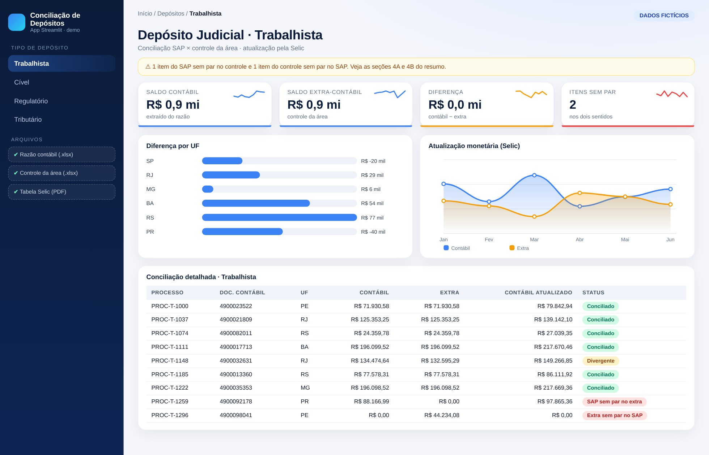
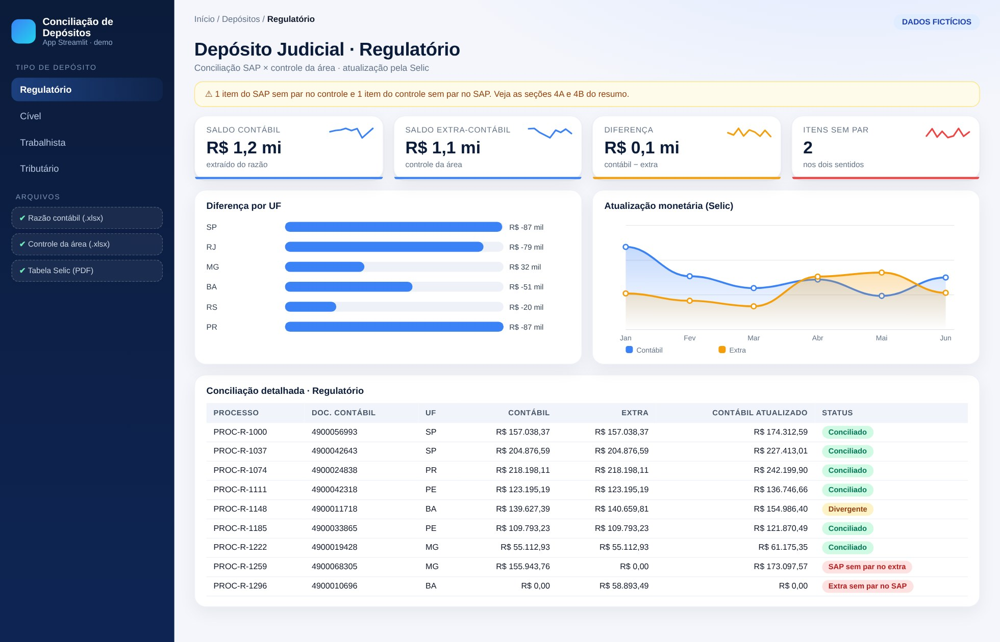
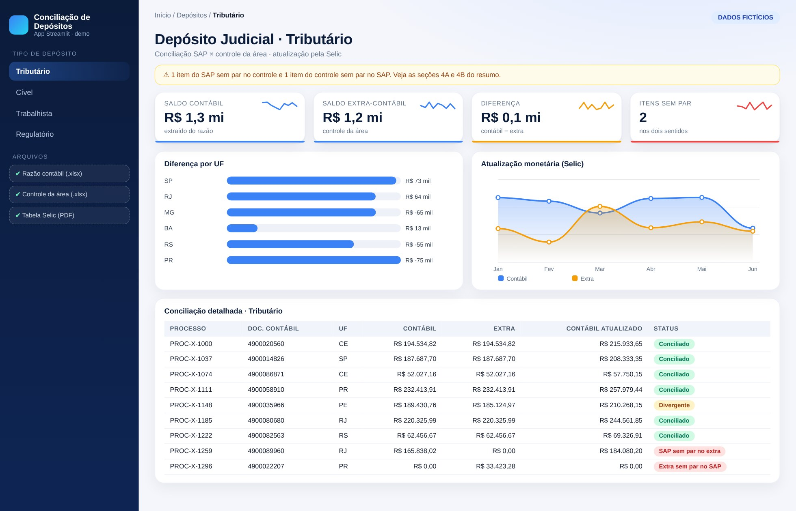

Lógica do negócio
Como funciona o processo
Quando a empresa é parte em um processo, pode precisar depositar valores em juízo como garantia. Esse dinheiro continua sendo dela até o desfecho, então fica no ativo e é atualizado monetariamente (Selic) até ser levantado ou convertido em pagamento.
Regras que governam o processo
- O saldo do razão (SAP) precisa bater com o controle da área jurídica, depósito a depósito
- A atualização segue a Selic acumulada desde a data do depósito até o fechamento
- Diferenças podem ser depósito sem controle, controle sem lançamento ou valor divergente
- A análise gerencial é feita por UF, via centro de custo
Como resolvi com dados
Extração
Razão do SAP (FBL3N) e controle da área em Excel, mais a análise do mês anterior como base.
Padronização
Normalizo chaves, valores e datas e leio a tabela da Selic direto do PDF oficial.
Cruzamento nos dois sentidos
Full join entre contábil e extra: SAP sem par no controle e controle sem par no SAP, cada um com motivo.
Cálculo
Atualização monetária pela Selic acumulada e comparação com o saldo contábil, por processo.
Entrega
Planilha de análise com capa, balanço, bases e resumo por UF, com alertas e cores, sem macro.
Tecnologias utilizadas
Funcionalidades
IA aplicada neste projeto
Cenários de teste com itens sem par, diferenças de centavos e Selic na virada do mês, além de revisão do código de cruzamento.

Miguel Vinicius Moura Martins
Defini a regra de negócio, modelei os dados, validei os números contra o processo manual e desenvolvi a ferramenta com apoio de IA.